q <- 0.8916
p <- dbinom(45, 46, q)
N <- 10000
odds <- p * N
print(1 - 1 / (1 + odds))
## 1
print(1 / (1 + odds))
## 0.0035
print(N * p / (N * p + 1))
## 12 Bayes’ Rule
“When the facts change, I change my mind. What do you do, sir?”—John Maynard Keynes
One of the key questions in the theory of learning is: How do you update your beliefs in the presence of new information? Bayes’ rule provides the answer. Conditional probability can be interpreted as updating your probability of event \(A\) after you have learned the new information that \(B\) has occurred. In this sense, probability is also the language of how you’ll change opinions in the light of new evidence.
Probability rules allow us to change our mind if the facts change. For example, suppose that we have evidence \(E = \{ E_1 , E_2 \}\) consisting of two pieces of information and that we are interested in identifying a cause \(C\). Bayes’ rule simply lets you calculate this conditional probability \(P(C\mid E_1,E_2)\) in a sequential fashion. First, conditioning on the information contained in \(E_1\) lets us calculate \[ P( C\mid E_1 ) = \frac{ P( E_1 \mid C ) P( C) }{ P( E_1 ) } \] Then, using the posterior probability \(P( C\mid E_1 )\) as the “new” prior for the next piece of information \(E_2\) lets us find \[ P( C\mid E_1 , E_2 ) = \frac{ P( E_2 \mid E_1 , C ) P( C \mid E_1 ) }{ P( E_2 \mid E_1 ) } \] Hence, we see that we need assessments of the two conditional probabilities \(P( E_1 \mid C )\) and \(P( E_2 \mid E_1 , C )\). In many situations, the latter will be simply \(P( E_2 \mid C )\) and not involve \(E_1\). The events \(( E_1, E_2 )\) will be said to be conditionally independent given \(C\).
This concept generalizes to a sequence of events where \(E = \{ E_1,\ldots E_n \}\). When learning from data, we will use this property all the time. An illustrative example will be the Black Swan problem, which we discuss later.
Bayes’ rule is a fundamental concept in probability theory and statistics. It describes how to update our beliefs about an event based on new evidence. We start with an initial belief about the probability of an event (called the prior probability). We then observe some conditional information (e.g., evidence). We use Bayes’ rule to update our initial belief based on the evidence, resulting in a new belief called the posterior probability. Remember, the formula is
where:
- \(P(A\mid B)\) is the posterior probability of event \(A\) occurring given that \(B\) is known to happen for sure. This is the probability we’re trying to find.
- \(P(B\mid A)\) is the likelihood of observing event \(B\) if event \(A\) has occurred.
- \(P(A)\) is the prior probability of event \(A\) occurring. This is our initial belief about the probability of \(A\) before we see any evidence.
- \(P(B)\) is the marginal probability of observing event \(B\). This is the probability of observing B regardless of whether \(A\) occurs.
The ability to use Bayes’ rule sequentially is key in many applications, when we need to update our beliefs in the presence of new information. For example, Bayesian learning was used by mathematician Alan Turing in England at Bletchley Park to break the German Enigma code - a development that helped the Allies win the Second World War (Simpson 2010). Turing called his algorithm Banburismus, it is a process he invented which used sequential conditional probability to infer information about the likely settings of the Enigma machine.
Dennis Lindley argued that we should all be trained in Bayes’ rule and that conditional probability can be simply viewed as disciplined probability accounting. Akin to how market odds change as evidence changes. However, human intuition is rarely naturally calibrated for Bayesian reasoning; it is a skill that must be learned, much like literacy.
2.1 Law of Total Probability
The Law of Total Probability is a fundamental rule relating marginal probabilities to conditional probabilities. It’s particularly useful when you’re dealing with a set of mutually exclusive and collectively exhaustive events.
Suppose you have a set of events \(B_1, B_2, ..., B_n\) that are mutually exclusive (i.e., no two events can occur at the same time) and collectively exhaustive (i.e., at least one of the events must occur). The Law of Total Probability states that for any other event \(A\), the probability of \(A\) occurring can be calculated as the sum of the probabilities of \(A\) occurring given each \(B_i\), multiplied by the probability of each \(B_i\) occurring.
Mathematically, it is expressed as: \[ P(A) = \sum_{i=1}^{n} P(A\mid B_i) P(B_i) \]
Example 2.1 (Total Probability) Let’s consider a simple example to illustrate this. Suppose you have two bags of balls. Bag 1 contains 3 red and 7 blue balls, while Bag 2 contains 6 red and 4 blue balls. You randomly choose one of the bags and then randomly draw a ball from that bag. What is the probability of drawing a red ball?
Here, the events \(B_1\) and \(B_2\) can be choosing Bag 1 and Bag 2, respectively. You want to find drawing a red ball (event \(A\)).
Applying the law:
- \(P(A\mid B_1)\) is the probability of drawing a red ball from Bag 1, which is \(\frac{3}{10}\).
- \(P(A\mid B_2)\) is the probability of drawing a red ball from Bag 2, which is \(\frac{6}{10}\).
- Assume the probability of choosing either bag is equal, so \(P(B_1) = P(B_2) = \frac{1}{2}\).
Using the Law of Total Probability: \[ P(A) = P(A\mid B_1) \times P(B_1) + P(A\mid B_2) \times P(B_2)= \frac{3}{10} \times \frac{1}{2} + \frac{6}{10} \times \frac{1}{2} = \frac{9}{20} \]
So, the probability of drawing a red ball in this scenario is \(\frac{9}{20}\).
This law is particularly useful in complex probability problems where direct calculation of probability is difficult. By breaking down the problem into conditional probabilities based on relevant events, it simplifies the calculation and helps to derive a solution.
2.2 Intuition and Simple Examples
Example 2.2 (Intuition) Our intuition is not well trained to make use of Bayes’ rule. Suppose I tell you that Steve was selected at random from a representative sample, and that he is 6 feet 2 inches tall and an excellent basketball player. He goes to the gym every day and practices hard playing basketball. Do you think Steve is a custodian at a factory or an NBA player? Most people assume Steve is an NBA player, which is wrong. The ratio of NBA players to custodians is very small, probabilistically Steve is more likely to be a custodian. Let’s look at it graphically. The key is to provide the right conditioning and to consider the prior probability! Even though the ratio of people who practice basketball hard is much higher among NBA players (it is 1) when compared to custodians, the larger number of the population means we still have more custodians in the US than NBA players.
\[\begin{align*} P(\text{Practice hard} \mid \text{Play in NBA}) \approx 1\\ P( \text{Play in NBA} \mid \text{Practice hard}) \approx 0. \end{align*}\]
Even though you practice hard, the odds of playing in the NBA are low (about \(450\) players out of \(8\) billion). But given you’re in the NBA, you no doubt practice very hard. To understand this further, let’s look at the conditional probability implication and apply Bayes’ rule \[ P \left ( \text{Play in NBA} \mid \text{Practice hard} \right ) = \dfrac{P \left ( \text{Practice hard} \mid \text{Play in NBA} \right )}{P(\text{Practice hard})}P( \text{Play in NBA}). \] This is written in the form \[ \text{Posterior} = \frac{\text{Likelihood}}{\text{Marginal}}\times \text{Prior} = \text{Bayes factor} \times \text{Prior}. \] The Likelihood/Marginal ratio is called the Bayes factor. As we will see in the text, one of the key advantages over classical is the ability to sequentially update our beliefs as new evidence appears. It allows for disciplined probability accounting in “real-time”. With the advent of prediction markets and data science, it has become increasingly important to be able to update our beliefs as new evidence appears.
The initial (a.k.a. prior) probability \(P(\text{Play in NBA} ) = 450/(8 \cdot 10^9) = 5.625 \times 10^{-8}\). This uses a global population of around 8 billion as the reference population. (The 7-foot example below uses US playing-age males as the reference, giving a different prior; the choice of reference population is part of the model specification.) \[ P \left ( \text{Play in NBA} \mid \text{Practice hard} \right ) \approx 0, \] \(P(\text{practice hard})\) is not that small and \(P(\text{practice hard} \mid \text{play in NBA})=1\). Hence, when one ‘reverses the conditioning’ one gets a very small probability. This makes sense!
The Steve example illustrates how our intuition fails us, but let’s consider an even more striking case that demonstrates the power of Bayes’ rule with extreme probabilities. Consider the question: what is the probability that a randomly selected 7-foot-tall American male plays in the NBA?
Most people’s intuition suggests this probability should be quite high - after all, being exceptionally tall seems like the primary qualification for professional basketball. However, Bayes’ rule reveals a more nuanced picture that depends critically on the base rates involved.
To calculate \(P(\text{NBA player} \mid \text{7 feet tall})\) using Bayes’ rule, we need to carefully estimate each component:
\[P(\text{NBA} \mid \text{7ft}) = \frac{P(\text{7ft} \mid \text{NBA}) \times P(\text{NBA})}{P(\text{7ft})}\]
The prior probability \(P(\text{NBA})\) represents the baseline chance of being an NBA player. With approximately 450 active players drawn from roughly 40 million American males of playing age, this gives us \(P(\text{NBA}) \approx 1.1 \times 10^{-5}\).
The likelihood \(P(\text{7ft} \mid \text{NBA})\) asks what fraction of NBA players are 7 feet or taller. Historically, this has been around 17% of the league, so \(P(\text{7ft} \mid \text{NBA}) \approx 0.17\).
The marginal probability \(P(\text{7ft})\) requires us to estimate how rare 7-foot-tall men are in the general population. If male height followed a normal distribution with mean 69 inches and standard deviation 3 inches, a \(z\)-score of 5.0 would give roughly 1 in 3.5 million, but the normal distribution dramatically underestimates the frequency of extreme heights because real height distributions have heavier tails. Empirical estimates suggest roughly 1 in 35,000 playing-age American males are 7 feet or taller, giving us \(P(\text{7ft}) \approx 2.87 \times 10^{-5}\).
Applying Bayes’ rule: \[P(\text{NBA} \mid \text{7ft}) = \frac{0.17 \times 1.1 \times 10^{-5}}{2.87 \times 10^{-5}} \approx 0.065\]
This yields approximately 6.5% - a dramatic increase from the baseline probability of 0.001%, yet still surprisingly low given our intuitions.
Let’s also consider a direct count-based calculation. As of September 2025, there are 39 players in the NBA who are 7 feet tall or taller, out of a total of 450 NBA players. This means the probability that a randomly selected NBA player is at least 7 feet tall is:
\[ P(\text{7ft} \mid \text{NBA}) = \frac{39}{450} = 0.0867 \]
This empirical estimate is slightly different from the earlier historical average, but it still highlights the rarity of extreme height even among elite basketball players. Substituting this count-based likelihood (\(0.0867\)) for the historical \(0.17\) in the Bayes calculation would roughly halve the posterior, to about \(3.3\%\) rather than \(6.5\%\).
Regardless of the exact calculation, this example powerfully demonstrates how Bayes’ rule forces us to account for base rates. Even when height provides enormous predictive value for NBA success (the likelihood ratio is massive), the extreme rarity of both 7-foot-tall individuals and NBA players means that most 7-footers will not be professional basketball players. This counterintuitive result exemplifies why disciplined probabilistic reasoning through Bayes’ rule is essential for making accurate inferences in the presence of rare events.
Example 2.3 (Craps) Craps is a fast-moving dice game with a complex betting layout. It’s highly volatile, but eventually your bankroll will drift towards zero. Let’s look at the pass line bet. The expectation \(E(X)\) governs the long run. When 7 or 11 comes up, you win. When 2, 3, or 12 comes up, this is known as “craps”, you lose. When 4, 5, 6, 8, 9, or 10 comes up, this number is called the “point”, the bettor continues to roll until a 7 (you lose) or the point comes up (you win).
We need to know the probability of winning. The pay-out, probability, and expectation for a $1 bet
| Win | Prob |
|---|---|
| 1 | 0.4929 |
| -1 | 0.5071 |
This leads to an edge in favor of the house as \[ E(X) = 1 \cdot 0.4929 + (- 1) \cdot 0.5071 = -0.014 \] The house has a 1.4% edge.
To calculate the probability of winning: \(P( \text{Win} )\), let’s use the law of total probability \[ P( \text{Win} ) = \sum_{ \mathrm{Point} } P ( \text{Win} \mid \mathrm{Point} ) P ( \mathrm{Point} ) \] The set of \(P(\text{Point})\) values is given by
| Value | Probability | Percentage |
|---|---|---|
| 2 | 1/36 | 2.78% |
| 3 | 2/36 | 5.56% |
| 4 | 3/36 | 8.33% |
| 5 | 4/36 | 11.1% |
| 6 | 5/36 | 13.9% |
| 7 | 6/36 | 16.7% |
| Value | Probability | Percentage |
|---|---|---|
| 8 | 5/36 | 13.9% |
| 9 | 4/36 | 11.1% |
| 10 | 3/36 | 8.33% |
| 11 | 2/36 | 5.56% |
| 12 | 1/36 | 2.78% |
The conditional probabilities \(P( \text{Win} \mid \mathrm{Point} )\) are harder to calculate \[ P( \text{Win} \mid 7 \; \mathrm{or} \; 11 ) = 1 \; \; \mathrm{and} \; \; P( \text{Win} \mid 2 , 3 \; \mathrm{or} \; 12 ) = 0 \] We still have to work out all the probabilities of winning given the point. Suppose the point is \(4\) \[ P( \text{Win} \mid 4 ) = P ( 4 \; \mathrm{before} \; 7 ) = \dfrac{P(4)}{P(7)+P(4)} = \frac{3}{9} = \frac{1}{3} \] There are 6 ways of getting a 7, 3 ways of getting a 4, for a total of 9 possibilities. Now do all of them and sum them up. You get \[ P( \text{Win}) = 0.4929 \] Hence, the casino has a slight edge of 1.4% in the long run!
Example 2.4 (Coin Jar) Large jar containing 1024 fair coins and one two-headed coin. You pick one at random and flip it \(10\) times and get all heads. What’s the probability that the coin is the two-headed coin? The probability of initially picking the two headed coin is 1/1025. There is a 1/1024 chance of getting \(10\) heads in a row from a fair coin. Therefore, it’s a \(50/50\) bet.
Let’s do the formal Bayes’ rule math. Let \(E\) be the event that you get \(10\) Heads in a row; then
\[ P \left ( \text{two-headed} \mid E \right ) = \frac{ P \left ( E \mid \text{two-headed} \right )P \left ( \text{two-headed} \right )} {P \left ( E \mid \text{fair} \right )P \left ( \text{fair} \right ) + P \left ( E \mid \text{two-headed} \right )P \left ( \text{two-headed} \right )} \] Therefore, the posterior probability \[ P \left ( \text{two-headed} \mid E \right ) = \frac{ 1 \times \frac{1}{1025} }{ \frac{1}{1024} \times \frac{1024}{1025} + 1 \times \frac{1}{1025} } = 0.50 \] What’s the probability that the next toss is a head? Using the law of total probability gives
\[\begin{align*} P( H ) &= P( H \mid \text{two-headed} )P( \text{two-headed} \mid E ) + P( H \mid \text{fair} )P( \text{fair} \mid E) \\ & = 1 \times \frac{1}{2} + \frac{1}{2} \times \frac{1}{2} = \frac{3}{4} \end{align*}\]
Example 2.5 (Monty Hall Problem) Another example of a situation when calculating probabilities is counterintuitive. The Monty Hall problem was named after the host of the long-running TV show Let’s Make a Deal. The original solution was proposed by Marilyn vos Savant, who had a column with the correct answer that many Mathematicians thought was wrong!
The game set-up is as follows. A contestant is given the choice of 3 doors. There is a prize (a car, say) behind one of the doors and something worthless behind the other two doors: two goats. The game is as follows:
- You pick a door.
- Monty then opens one of the other two doors, revealing a goat. He can’t open your door or show you a car
- You have the choice of switching doors.
The question is, is it advantageous to switch? The answer is yes. The probability of winning if you switch is 2/3 and if you don’t switch is 1/3.
Conditional probabilities allow us to answer this question. Assume you pick door 1. Let event \(A\) denote that the car is behind Door 2, and let event \(B\) denote that the host opened Door 3, revealing a goat. We want to calculate \(P(A\mid B)\), the probability the car is behind the door you should switch to. The prior probability that the car is behind Door 2 is \(P(A) = 1/3\). If the car is behind Door 2; the host must open Door 3 (he cannot open Door 1 or show the car behind Door 2), so \(P(B\mid A) = 1\). Bayes’ rule gives us \[ P(A\mid B) = \frac{P(B\mid A)P(A)}{P(B)} = \frac{1/3}{1/2} = \frac{2}{3}. \] The overall probability of the host opening Door 3 \[ P(B) = (1/3 \times 1/2) + (1/3 \times 1) = 1/6 + 1/3 = 1/2. \]
The posterior probability that the car is behind Door 2 after the host opens Door 3 is 2/3. It is to your advantage to switch doors.
2.3 Real World Bayes
The true power of Bayes’ rule emerges in high-stakes decisions. The following cases (search-and-rescue operations, wartime survival, and legal proceedings) share a common insight: updating beliefs systematically while accounting for base rates and the direction of conditioning.
Example 2.6 (USS Scorpion Sank 22 May 1968 in the Middle of the Atlantic) Experts placed bets on each casualty and how each would affect the sinking. Undersea soundings gave a prior on location. Bayes’ rule: \(L\) is location, and \(S\) is scenario \[ P (L \mid S) = \frac{ P(S \mid L) P(L)}{P(S)} \] The Navy spent \(5\) months looking and found nothing. Built a probability map: within \(5\) days, the submarine was found within \(220\) yards of the most likely probability!
A similar story happened during the search for an Air France plane that flew from Rio to Paris.
Example 2.7 (Wald and Airplane Safety) Many lives were saved by analysis of conditional probabilities performed by Abraham Wald during the Second World War. He was analyzing damage on the US planes that came back from bombing missions in Germany. Somebody suggested to analyze the distribution of the hits over different parts of the plane. The idea was to find a pattern in the damage and design a reinforcement strategy.
After examining hundreds of damaged airplanes, researchers came up with the following table
| Location | Number of Planes |
|---|---|
| Engine | 53 |
| Cockpit | 65 |
| Fuel system | 96 |
| Wings, fuselage, etc. | 434 |
We can convert those counts to probabilities
| Location | Number of Planes |
|---|---|
| Engine | 0.08 |
| Cockpit | 0.1 |
| Fuel system | 0.15 |
| Wings, fuselage, etc. | 0.67 |
We can conclude that the most likely area to be damaged on the returned planes was the wings and fuselage. \[ P(\mbox{hit on wings or fuselage } \mid \mbox{returns safely}) = 0.67 \] Wald realized that analyzing damages only on survived planes is not the right approach. Instead, he suggested that it is essential to calculate the inverse probability \[ P(\mbox{returns safely} \mid \mbox{hit on wings or fuselage }) = ? \] To calculate that, he interviewed many engineers and pilots; he performed a lot of field experiments. He analyzed likely attack angles. He studied the properties of a shrapnel cloud from a flak gun. He suggested to the army that they fire thousands of dummy bullets at a plane sitting on the tarmac. Wald constructed a ‘probability model’ carefully to reconstruct an estimate for the joint probabilities. The table below shows the results.
| Hit | Returned | Shot Down |
|---|---|---|
| Engine | 53 | 57 |
| Cockpit | 65 | 46 |
| Fuel system | 96 | 16 |
| Wings, fuselage, etc. | 434 | 33 |
Which allows us to estimate joint probabilities, for example \[ P(\mbox{outcome = returns safely} , \mbox{hit = engine }) = 53/800 = 0.066 \] We also can calculate the conditional probabilities now \[ P(\mbox{outcome = returns safely} \mid \mbox{hit = wings or fuselage }) = \dfrac{434}{434+33} = 0.9293362. \] Should we reinforce wings or fuselage? Which part of the airplane needs to be reinforced? \[ P(\mbox{outcome = returns safely} \mid \mbox{hit = engine }) = \dfrac{53}{53+57} = 0.48 \]
A convenient way to perform Bayes’ rule calculations is using the “odds” form. ::: {.callout-note} ## Bayes’ Rule in Odds Form \[ \underbrace{O(H \mid E)}_{\text{Posterior Odds}} = \underbrace{\frac{P(E \mid H)}{P(E \mid \neg H)}}_{\text{Bayes factor}} \times \underbrace{O(H)}_{\text{Prior Odds}} \] ::: Here, the odds of an event \(H\) are defined as \(O(H) = \frac{P(H)}{P(\neg H)}\). This separates the contribution of the evidence (Bayes factor) from the prior belief.
Example 2.8 (The Prosecutor’s Fallacy) The Prosecutor’s Fallacy is a logical error that occurs when a prosecutor presents evidence or statistical data in a way that suggests a defendant’s guilt, even though the evidence is not as conclusive as it may seem. This fallacy arises from confounding conditional probabilities, specifically equating the probability of evidence given guilt \(P(E\mid G)\) with the probability of guilt given evidence \(P(G\mid E)\). \[ P(E\mid G) \ne P(G\mid E) \] A classic example involves DNA evidence. Suppose you’re serving on a jury in a city with a population of 10 million. A defendant is accused of a crime based on a DNA match found at the scene. A forensic scientist testifies that the probability of an innocent person’s DNA matching the sample is one in a million (\(P(E\mid \bar G) = 10^{-6}\)).
The prosecutor argues that this means there is only a one in a million chance the defendant is innocent. This is the fallacy. You are charged with assessing \(P(G \mid E)\) - the probability of guilt given the match.
Let’s apply Bayes’ rule.
- \(P(G) \approx 1/10^7\) (Prior probability, assuming a random citizen).
- \(P(E\mid \bar G) = 10^{-6}\) (False positive rate).
- \(P(E\mid G) \approx 1\) (Sensitivity).
\[ P(G\mid E) = \frac{P(E\mid G)P(G)}{P(E\mid G)P(G) + P(E\mid \bar G)P(\bar G)} \] \[ P(G\mid E) \approx \frac{1 \cdot 10^{-7}}{1 \cdot 10^{-7} + 10^{-6} \cdot 1} = \frac{10^{-7}}{1.1 \times 10^{-6}} \approx \frac{1}{11} \approx 0.09 \]
Despite the “one in a million” match rarity, the probability of guilt is only about 9%! There are 10 million people, so we expect about 10 innocent matches (\(10^7 \times 10^{-6}\)) and 1 guilty match. Thus, out of 11 matches, only 1 is guilty. The prosecutor’s argument ignores the base rate.
Example 2.9 (Island Problem) There are \(N+1\) people on the island, and one is a criminal. We have the probability of a trait of a criminal equal to \(p\), which is \(p = P(E\mid I)\), the probability of evidence, given innocence. Then we have a suspect who is matching the trait, and we need to find the probability of being guilty, given the evidence, \(P(G \mid E)\). It is easier to do Bayes’ rule in the odds form. There are three components to the calculations: the prior odds of innocence, \[ O ( I ) = P (I) / P ( G ), \] the Bayes factor, \[ \frac{P(E\mid G)}{P(E\mid I)}. \] and the posterior odds of guilt. \[ O(G\mid E) = \dfrac{P(G\mid E)}{P(I\mid E)} = \dfrac{1}{Np}. \]
Cromwell’s rule states that the use of prior probability of 1 or 0 should be avoided except when it is known for certain that the probability is 1 or 0. It is named after Oliver Cromwell who wrote to the General Assembly of the Church of Scotland in 1650 “I beseech you, in the bowels of Christ, think it possible that you may be mistaken.” In other words, using Bayes’ rule \[ P(G\mid E) = \dfrac{P(E\mid G)}{P(E)}P(G), \] if \(P(G)\) is zero, it does not matter what the evidence is. Symmetrically, the probability of innocence is zero if the evidence is certain. In other words, if \(P(E\mid I) = 0\), then \(P(I\mid E) = 0\). This is a very strong statement. It is not always true, but it is a good rule of thumb; it is a good way to avoid the prosecutor’s fallacy.
Example 2.10 (Nakamura’s Alleged Cheating) In our paper Maharaj, Polson, and Sokolov (2023), we provide a statistical analysis of the recent controversy between Vladimir Kramnik (ex-world champion) and Hikaru Nakamura. Kramnik called into question Nakamura’s 45.5 out of 46 win streak in a 3+0 online blitz contest at chess.com. In this example, we reproduce this paper and assess the weight of evidence using an a priori probabilistic assessment of Viswanathan Anand and the streak evidence of Kramnik. Our analysis shows that Nakamura has a 99.6 percent chance of not cheating given Anand’s prior assumptions.
We start by addressing the argument of Kramnik which is based on the fact that the probability of such a streak is very small. This falls into precisely the Prosecutor’s Fallacy, as discussed in Example 2.8. We denote by \(G\) the event of being guilty and \(I\) the event of innocence. We use \(E\) to denote evidence (streak of wins). Kramnik’s argument is that because the probability of observing the streak is very low (\(P(E\mid I)\) is small), it implies a high probability of cheating (\(P(G\mid E)\) is high). As we have seen, this reasoning is flawed because it neglects the prior probability of cheating. Kramnik’s calculations neglect other relevant factors, such as the prior probability of cheating. The prosecutor’s fallacy can lead to an overestimation of the strength of the evidence and may result in an unjust conviction. In the cheating problem, at the top level of chess, the prior probability of \(P(G)\) is small! According to a recent statement by Viswanathan Anand, the probability of cheating is \(1/10000\).
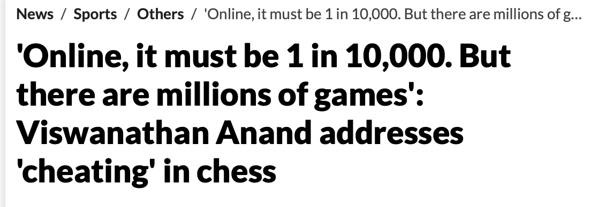
Given the prior ratio of cheaters to non-cheaters is \(1/N\), meaning out of \(N+1\) players, there is one cheater, the Bayes calculations require two main terms. The first one is the prior odds of innocence: \[ O ( I ) = P (I) / P ( G ). \] Here \(P(I)\) and \(P(G)\) are the prior probabilities of innocence and guilt, respectively.
The second term is the Bayes factor in favor of innocence, which is the ratio of the probability of the evidence under the innocence hypothesis to the probability of the evidence under the guilt hypothesis: \[ L(E\mid I) = \frac{P(E\mid I)}{P(E\mid G)}. \]
The product of the Bayes factor and the prior odds is the posterior odds of innocence, given the evidence: \[ O(I\mid E) = O(I) \times L(E\mid I). \]
The odds of innocence is \[ O ( I ) = \dfrac{N/(N+1)}{1/(N+1)} = N. \]
The Bayes factor is given by \[ \frac{P(E\mid I)}{P(E\mid G)} = \dfrac{p}{1} = p. \] Thus, the posterior odds of innocence are \[ O(I\mid E) = Np. \] There are two numbers we need to estimate to calculate the odds of innocence given the evidence, namely the prior probability of cheating given via \(N\) and the probability of a streak \(p = P(E\mid I)\).
There are multiple ways to calculate the probability of a streak. We can use the binomial distribution, the negative binomial distribution, or the Poisson distribution. The binomial distribution is the most natural choice. The probability of a streak of \(k\) wins in a row is given by \[ P(E\mid I) = \binom{N}{k} q^k (1-q)^{N-k}. \] Here \(q\) is the probability of winning a single game. Thus, for a streak of 45 wins in a row, we have \(k = 45\) and \(N = 46\). We encode the outcome of a game as \(1\) for a win and \(0\) for a loss or a draw. The probability of a win is \(q = 0.8916\) (Nakamura’s Estimate, which he reported on his YouTube channel). The probability of a streak is then 0.029. The individual game win probability is calculated from the ELO rating difference between the players.
The ELO rating of Hikaru is 3300, and the average ELO rating of his opponents is 2950, according to Kramnik. The difference of 350 corresponds to the odds of winning of \(wo = 10^{350/400} = 10^{0.875} = 7.5\). The probability of winning a single game is \(q = wo/(1+wo) = 0.88\), close to Nakamura’s own estimate of \(0.8916\) that we use here.
Then we use Anand’s prior of \(N = 10000\) to get the posterior odds of cheating given the evidence of a streak of 45 wins in a row. The posterior odds of being innocent are 285. The probability of cheating is then \[ P(G\mid E) = 1/(1+O(I\mid E)) = 0.003491. \] Therefore, the probability of innocence is \[ P(I\mid E) = \frac{Np}{Np+1} = 0.9965. \]
For completeness, we perform a sensitivity analysis and also get the odds of not cheating for \(N = 500\), which should be a high prior probability given the status of the player and the importance of the event. We get \[ P(I\mid E) = \frac{Np}{Np+1} = 0.9345. \]
There are several assumptions we made in this analysis.
- Instead of calculating game-by-game probability of winning, we used the average probability of winning of 0.8916, provided by Nakamura himself. This is a reasonable assumption given the fact that Nakamura is a much stronger player than his opponents. This assumption slightly shifts posterior odds in favor of not cheating. Due to Jensen’s inequality, we have \(E(q^{50}) > E(q)^{50}\). Expected value of the probability of winning a single game is \(E(q) = 0.8916\) and the expected value of the probability of a streak of 50 wins is \(E(q^{50})\). We consider the difference between the two to be small. Further, there is some correlation between the games, which also shifts the posterior odds in favor of not cheating. For example, some players are on tilt. Given they lost the first game, they are more likely to lose the second game.
- There are many ways to win 3+0, unlike in classical chess. For example, one can win on time. We argue that the probability of winning calculated from the ELO rating difference is underestimated.
Next, we can use the Bayes analysis to solve an inverse problem and to find what prior you need to assume and how long of a sequence you need to observe to get 0.99 posterior? Small sample size, we have \(p\) close to 1. Figure 2.1 shows the combination of prior (\(N\)) and the probability of a streak (\(p\)) that gives posterior probability of 0.99.
Indeed, the results of the Bayesian analysis contradict the results of a traditional \(p\)-value based approach. A \(p\)-value is a measure used in frequentist statistical hypothesis testing. It represents the probability of obtaining the observed results, or results more extreme, assuming that the null hypothesis is true. The null hypothesis is a default position that Nakamura is not cheating, and we compare the ELO-based expected win probability of \(q=0.8916\) to the observed one of \(s=45/46=0.978\). Under the null hypothesis, Nakamura should perform at the level predicted by \(q\).
N <- seq(500, 10000, by = 250)
plot(99 / N, N, xlab = "p", ylab = "N", type = "l", lwd = 3, col = "blue")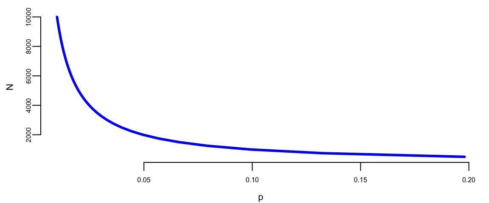
David Hume discussed the problem similar to the Island problem in his “On Miracles” essay. Hume is making the following argument on miracles:
“…no testimony is sufficient to establish a miracle, unless the testimony be of such a kind, that its falsehood would be more miraculous, than the fact, which it endeavors to establish; and even in that case there is a mutual destruction of arguments, and the superior only gives us an assurance suitable to that degree of force, which remains, after deducting the inferior.”
One can view this as an application of the Island problem. Assuming the probability of a miracle \(A\) is \(P( A) = p\) and \(P( \text{not } A ) = 1 -p\). Then Bayes’ rule gives \[ P( A\mid a ) = \frac{ P( a\mid A) p }{ P( a\mid A) p + P( a \mid \text{not } A) (1-p) } \] Prosecutor’s fallacy, \(P( a\mid \text{not } A) \neq 1 - P( a\mid A)\), in general.
In Hume’s assessment of miracles (has to be something not in the laws of nature), we have \(P(A) = 10^{-6}\). This assessment takes into account background information, \(I\). Rare to have a contradiction to the laws of nature. More informative to write \(P( A \mid I )\). Furthermore, we take \(P( a\mid A) =0.99\). The hardest bit is to assess \(P(a \mid \text{not } A )\). The “frequency” of faked miracles and mankind’s propensity to be marvelous. We assess \(P(a \mid \text{not } A ) = 10^{-3}\). This yields the chance of a miracle to be unlikely as \[ P( A\mid a ) = \frac{ 0.99 \times 10^{-6} }{ 0.99 \times 10^{-6} + 10^{-3} (1- 10^{-6}) } \approx 10^{-3}. \] Feynman considers the inverse problem: can we learn the laws of nature purely from empirical observation? Uses chess as an example. Is it a miracle that we have two bishops of the same color? No! according to Hume. We just didn’t know the laws of nature (a.k.a. model).
Example 2.11 (Sally Clark Case: Independence or Bayes’ Rule?) To show that independence can lead to dramatically different results from Bayes conditional probabilities, consider the Sally Clark case. Sally Clark was accused and convicted of killing her two children who could have both died of SIDS. One explanation is that this was a random occurrence; the other one is that they both died of sudden infant death syndrome (SIDS). How can we use conditional probability to figure out a reasonable assessment of the probability that she murdered her children. First, some known probability assessments
- The chance of a family of non-smokers having an SIDS death is \(1\) in \(8{,}500\).
- The chance of a second SIDS death is \(1\) in \(100\).
- The chance of a mother killing her two children is around \(1\) in \(1{,}000{,}000\).
Under Bayes \[\begin{align*} P(\mathrm{both} \; \; \mathrm{SIDS}) & = P(\mathrm{first} \; \mathrm{SIDS}) P(\mathrm{Second} \; \;\mathrm{SIDS} \mid \mathrm{first} \; \mathrm{SIDS})\\ & = \frac{1}{8500} \cdot \frac{1}{100} = \frac{1}{850{,}000}. \end{align*}\]
The \(1/100\) comes from taking into account the genetic properties of SIDS. Independence, as implemented by the court, gets you to a probabilistic assessment of \[ P \left( \mathrm{both} \; \; \mathrm{SIDS} \right) = (1/8500) (1/8500) \approx (1/72{,}000{,}000). \] This is a low probability. It is still not the answer to our question of context. We need a conditional probability; this will come to Bayes’ rule.
First, some general comment on the likelihood ratio calculation used to assess the weight of evidence in favor of guilty v.s. innocent evidence. Under Bayes we’ll find that there’s reasonable evidence that she’d be acquitted. We need the relative odds ratio. Let \(I\) denote the event that Sally Clark is innocent and \(G\) denotes guilty. Let \(E\) denote the evidence. In most cases, \(E\) contains a sequence \(E_1, E_2, \ldots\) of ‘facts’ and we have to use the likelihood ratios in turn. Bayes’ rule then tells you to combine via multiplicative fashion. If likelihood ratio \(>1\), odds of guilty. If likelihood ratio \(<1\), more likelihood to be \(I\). By Bayes’ rule \[ \frac{P(I\mid E)}{P(G\mid E)} = \frac{P( E\text{ and } I)}{P( E\text{ and } G)}. \] If we further decompose \(P(E \text{ and } I) = P(E\mid I )P(I)\) then we have to discuss the prior probability of innocence, namely \(P(I)\). Hence, this is one subtle advantage of the above decomposition.
The underlying intuition that Bayes gives us in this example, is that of the two possible explanations of the data, both of which are unlikely, it is the relative likelihood comparison that should matter. Here is a case where the \(p\)-value would be non-sensible (\(P(E\mid I) \neq P(I\mid E)\)). Effectively comparing two rare event probabilities from the two possible models or explanations.
Hence, putting these two together gives the odds of guilt as \[ \frac{P(I\mid E)}{P(G\mid E)} = \frac{1/850{,}000}{1/1{,}000{,}000} = 1.18. \] Solving for the posterior probability yields \(46\%\) for the probability of guilty given evidence. \[ P( G\mid E) = \frac{1}{1 + O(I\mid E)} = 0.46. \] Basically a \(50/50\) bet. Not enough to definitively convict! But remember that our initial prior probability on guilt \(P(G)\) was \(10^{-6}\). So now there has been a dramatic increase to a posterior probability of \(0.46\). So it’s not as if Bayes’ rule thinks this is evidence in the suspect’s favor, but the magnitude is still not in the \(0.999\) range, though, where most jurors would have to be to feel comfortable with a guilt verdict.
If you use the “wrong” model of independence (as the court did), you get \[ P \left( \mathrm{both} \; \; \mathrm{SIDS} \right) = \frac{1}{8500} \cdot\frac{1}{8500} \approx \frac{1}{72{,}000{,}000}. \] With the independence assumption, you make the assessment \[ \frac{P(I\mid E)}{P(G\mid E)} = \frac{1}{72} \; \mathrm{ and} \; P( G\mid E) \approx 0.99. \] Given these probability assumptions, the suspect looks guilty with probability 99%.
Experts also mis-interpret the evidence by saying: 1 in 73 million chance that it is someone else. This is clearly false and misleading to the jury and has led to appeals.
Example 2.12 (O. J. Simpson Case: Dershowitz Fallacy)
This example is based on I. J. Good’s, “When batterer turns murderer.” Nature, 15 June 1995, p. 541. Alan Dershowitz, on the O. J. Simpson defense team, stated on T.V. and in newspapers that only 1 in 2,500 of men who abuse their wives go on to murder them. He clearly wanted his audience to interpret this to mean that the evidence of abuse by Simpson would only suggest a 0.04% probability of his being guilty of murdering her. He used probability to argue that because so few husbands who batter their wives actually go on to murder their wives. Thus, O.J. is highly likely to be not guilty. This leaves out the most relevant conditioning information that we also know that Nicole Brown Simpson was actually murdered. Both authors believe the jury would be more interested in the probability that the husband is guilty of the murder of his wife given that he abused his wife and his wife was murdered. They both solve this problem by using Bayes’ theorem.
In this example, the notation \(B\) represents “woman battered by her husband, boyfriend, or lover”, \(M\) represents the event “woman murdered”, and \(G\) denotes “woman murdered by her batterer”. Our goal is to show that \[ % P(M,B \mid M) \neq P(M,B \mid B). P(G \mid M,B) \neq P(G\mid B). \]
It is not hard to come to a wrong conclusion if you don’t take into account all the relevant conditional information. He intended this information to exonerate O.J. In 1992, the women population of the US was 125 million, and 4936 women were murdered; thus \[ P(M) = 4936/125{,}000{,}000 = 0.00004 = 1/25{,}000. \] At the same year, about 3.5 million women were battered \[ P(B) = 3.5/125 = 0.028. \] That same year, 1432 women were murdered by their previous batterers, so the marginal probability of that event is \(P(G) = 1432/125{,}000{,}000 = 0.00001 = 1/87{,}290\), and the conditional probability, \(P(G \mid B)\), is 1432 divided by 3.5 million, or \(1/2444\). These are the numbers Dershowitz used to obtain his estimate that about 1 in 2500 battered women go on to be murdered by their batterers.
We need to calculate \[ P(G \mid M,B) = P(M \mid G,B) P(G) / P(M). \] We know \(P(M \mid G,B) = 1\) and \(P(G) / P(M) = 1432/4936 = 0.29\), or about 1 in 3.5.
Alan Dershowitz provided the jury with an accurate but irrelevant probability. The fact that the woman was murdered increases the probability that she was murdered by her batterer by a factor of 709 (0.29/(1/2444)). \[ P(G\mid M,B)\approx 709\times P(G\mid B). \]
The argument used by Dershowitz relating to the Simpson case has been discussed by John Paulos in an op-ed article in the Philadelphia Inquirer (15 Oct. 1995, C7) and his book “Once Upon a Number,” by I.J. Good in an article in Nature (June 15,1995, p 541) and by Jon Merz and Jonathan Caulkins in an article in Chance Magazine, (Spring 1995, p 14).
2.4 First Application: Naive Bayes
Use of Bayes’ rule allows us to build our first predictive model, called the Naive Bayes classifier. Naive Bayes is a collection of classification algorithms based on Bayes’ theorem. It is not a single algorithm but a family of algorithms that all share a common principle, that every feature being classified is independent of the value of any other feature. For example, a fruit may be considered to be an apple if it is red, round, and about 3” in diameter. A Naive Bayes classifier considers each of these “features” (red, round, 3” in diameter) to contribute independently to the probability that the fruit is an apple, regardless of any correlations between features. Features, however, aren’t always independent, which is often seen as a shortcoming of the Naive Bayes algorithm, and this is why it’s labeled “naive”.
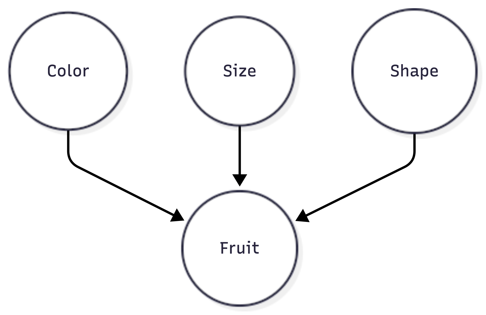
Although it’s a relatively simple idea, Naive Bayes can often outperform other more sophisticated algorithms and is extremely useful in common applications like spam detection and document classification. In short, the algorithm allows us to predict a class, given a set of features using probability. So in another fruit example, we could predict whether a fruit is an apple, orange, or banana (class) based on its color, shape, etc. (features). In summary, the advantages are:
- It’s relatively simple to understand and build
- It’s easily trained, even with a small dataset
- It’s fast!
- It’s not sensitive to irrelevant features
The main disadvantage is that it assumes every feature is independent, which isn’t always the case.
Let’s say we have data on 1000 pieces of fruit. The fruit being a Banana, Orange, or some Other fruit, and imagine we know 3 features of each fruit: whether it’s long or not, sweet or not, and yellow or not, as displayed in the table below:
| Fruit | Long | Sweet | Yellow | Total |
|---|---|---|---|---|
| Banana | 400 | 350 | 450 | 500 |
| Orange | 0 | 150 | 300 | 300 |
| Other | 100 | 150 | 50 | 200 |
| Total | 500 | 650 | 800 | 1000 |
From these data, we can calculate marginal probabilities
- 50% of the fruits are bananas
- 30% are oranges
- 20% are other fruits
Based on our training set, we can also say the following:
- From 500 bananas, 400 (0.8) are Long, 350 (0.7) are Sweet, and 450 (0.9) are Yellow
- Out of 300 oranges, 0 are Long, 150 (0.5) are Sweet, and 300 (1) are Yellow
- From the remaining 200 fruits, 100 (0.5) are Long, 150 (0.75) are Sweet, and 50 (0.25) are Yellow So let’s say we’re given the features of a piece of fruit, and we need to predict the class. If we’re told that the additional fruit is Long, Sweet, and Yellow, we can classify it using the following formula and subbing in the values for each outcome, whether it’s a Banana, an Orange, or Other Fruit. The one with the highest probability (score) being the winner.
Given the evidence \(E\) (\(L\) = Long, \(S\) = Sweet and \(Y\) = Yellow), we can calculate the probability of each class \(C\) (\(B\) = Banana, \(O\) = Orange or \(F\) = Other Fruit) using Bayes’ theorem: \[\begin{align*} P(B \mid E) = & \frac{P(L \mid B)P(S \mid B)P(Y \mid B)P(B)}{P(L)P(S)P(Y)}\\ =&\frac{0.8\times 0.7\times 0.9\times 0.5}{P(E)}=\frac{0.252}{P(E)} \end{align*}\]
Orange: \[ P(O\mid E)=0. \]
Other Fruit: \[\begin{align*} P(F \mid E) & = \frac{P(L \mid F)P(S \mid F)P(Y \mid F)P(F)}{P(L)P(S)P(Y)}\\ =&\frac{0.5\times 0.75\times 0.25\times 0.2}{P(E)}=\frac{0.01875}{P(E)} \end{align*}\]
In this case, based on the higher score, we can assume this Long, Sweet, and Yellow fruit is, in fact, a Banana.
Notice, we did not have to calculate \(P(E)\) because it is a normalizing constant and it cancels out when we calculate the ratio
\[ \dfrac{P(B \mid E)}{P(F \mid E)} = 0.252/0.01875 = 13.44 > 1. \]
Now that we’ve seen a basic example of Naive Bayes in action, you can easily see how it can be applied to Text Classification problems such as spam detection, sentiment analysis, and categorization. By looking at documents as a set of words, which would represent features, and labels (e.g., “spam” and “ham” in the case of spam detection) as classes, we can start to classify documents and text automatically.
Example 2.13 (Spam Filtering) The original spam filtering algorithm was based on Naive Bayes. The “naive” aspect of Naive Bayes comes from the assumption that inputs (words in the case of text classification) are conditionally independent, given the class label. Naive Bayes treats each word independently, and the model doesn’t capture the sequential or structural information inherent in the language. It does not consider grammatical relationships or syntactic structures. The algorithm doesn’t understand the grammatical rules that dictate how words should be combined to form meaningful sentences. Further, it doesn’t understand the context in which words appear. For example, it may treat the word “bank” the same whether it refers to a financial institution or the side of a river bank. Despite its simplicity and the naive assumption, Naive Bayes often performs well in practice, especially in text classification tasks.
We start by collecting a dataset of emails labeled as “spam” or “not spam” (ham) and calculate the prior probabilities of spam (\(P(\text{spam})\)) and not spam (\(P(\text{ham})\)) based on the training dataset by simply counting the proportions of each in the data.
Then each email gets converted into a bag-of-words representation (ignoring word order and considering only word frequencies). Then, we create a vocabulary of unique words from the entire dataset \(w_1,w_2,\ldots,w_N\) and calculate conditional probabilities \[ P(\mathrm{word}_i \mid \text{spam}) = \frac{\text{Number of spam emails containing }\mathrm{word}_i}{\text{Total number of spam emails}}, ~ i=1,\ldots,n \] \[ P(\mathrm{word}_i \mid \text{ham}) = \frac{\text{Number of ham emails containing }\mathrm{word}_i}{\text{Total number of ham emails}}, ~ i=1,\ldots,n \]
Now, we are ready to use our model to classify new emails. We do it by calculating the posterior probability using Bayes’ theorem. Say an email has a set of \(k\) words \(\text{email} = \{w_{e1},w_{e2},\ldots, w_{ek}\}\), then \[ P(\text{spam} \mid \text{email}) = \frac{P(\text{email} \mid \text{spam}) \times P(\text{spam})}{P(\text{email})} \] Here \[ P(\text{email} \mid \text{spam}) = P( w_{e1} \mid \text{spam})P( w_{e2} \mid \text{spam})\ldots P( w_{ek} \mid \text{spam}) \] We calculate \(P(\text{ham} \mid \text{email})\) in a similar way.
Finally, we classify the email as spam or ham based on the class with the highest posterior probability.
Suppose you have a spam email with the word “discount” appearing. Using Naive Bayes, you’d calculate the probability that an email containing “discount” is spam \(P(\text{spam} \mid \text{discount})\) and ham \(P(\text{ham} \mid \text{discount})\), and then compare these probabilities to make a classification decision.
While the naive assumption simplifies the model and makes it computationally efficient, it comes at the cost of a more nuanced understanding of language. More sophisticated models, such as transformers, have been developed to address these limitations by considering the sequential nature of language and capturing contextual relationships between words.
In summary, naive Bayes, due to its simplicity and the naive assumption of independence, is not capable of understanding the rules of grammar, the order of words, or the intricate context in which words are used. It is a basic algorithm suitable for certain tasks but may lack the complexity needed for tasks that require a deeper understanding of language structure and semantics.
2.5 Sensitivity and Specificity
Conditional probabilities are used to define two fundamental metrics used for many probabilistic and statistical learning models, namely sensitivity and specificity.
Sensitivity and specificity are two key metrics used to evaluate the performance of diagnostic tests, classification models, or screening tools. These metrics help assess how well a test can correctly identify individuals with a condition (true positives) and those without the condition (true negatives). Let’s break down each term:
- Sensitivity (true‐positive rate or recall) is the ability of a test \(T\) to correctly identify individuals who have a particular condition or disease (\(D\)), \(P ( T=1 \mid D=1 )\), the probability of a positive test given that the individual has the disease. It is calculated as the ratio of true positives to the sum of true positives and false negatives. \[ P(T=1\mid D=1) = \dfrac{P(T=1,D=1)}{P(D=1)}. \] A high sensitivity indicates that the test is good at identifying individuals with the condition, minimizing false negatives.
- Specificity (true‐negative rate) is the ability of a test to correctly identify individuals who do not have a particular condition or disease, \(P (T=0 \mid D=0 )\). It is calculated as the ratio of true negatives to the sum of true negatives and false positives. \[ P(T=0\mid D=0) = \dfrac{P(T=0,D=0)}{P(D=0)} \] A high specificity indicates that the test is good at correctly excluding individuals without the condition, minimizing false positives.
Sensitivity and specificity are often trade-offs. Increasing sensitivity might decrease specificity, and vice versa. Thus, depending on the application, you might prefer sensitivity over specificity or vice versa, depending on the consequences of false positives and false negatives in a particular application.
Consider a medical test designed to detect a certain disease. If the test has high sensitivity, it means that it is good at correctly identifying individuals with the disease. On the other hand, if the test has high specificity, it is good at correctly identifying individuals without the disease. The goal is often to strike a balance between sensitivity and specificity based on the specific needs and implications of the test results.
Sensitivity is often called the power of a procedure (a.k.a. test). Type I and Type II errors are fundamental concepts in hypothesis testing, serving as the duals to specificity and sensitivity.
We would like to control both conditional probabilities with our test. Also, if someone tests positive, how likely is it that they actually have the disease. There are two ‘errors’ one can make. Falsely diagnosing someone, or not correctly finding the disease.
In the stock market, one can think of a type I error as not selling a losing stock quickly enough, and a type II error as failing to buy a growing stock, e.g., Amazon or Google.
| \(P(T=1\mid D=1)\) | Sensitivity | True Positive Rate | \(1-\beta\) |
| \(P(T=0\mid D=0 )\) | Specificity | True Negative Rate | \(1-\alpha\) |
| \(P(T=1\mid D=0)\) | 1-Specificity | False Positive Rate | \(\alpha\) (type I error) |
| \(P(T=0\mid D =1)\) | 1-Sensitivity | False Negative Rate | \(\beta\) (type II error) |
Often it is convenient to write those four values in the form of a two-by-two matrix, called the confusion matrix:
| Actual/Predicted | Positive | Negative |
|---|---|---|
| Positive | TP | FN |
| Negative | FP | TN |
where: TP: True Positive. FN: False Negative, FP: False Positive, TN: True Negative
We will extensively use the concepts of errors, specificity, and sensitivity later in the book, when describing AB testing and predictive models. These examples illustrate why people can commonly miscalculate and mis-interpret probabilities. Those quantities can be calculated using Bayes’ rule.
Medical Diagnostics
Example 2.14 (Alice Mammogram) Alice is a 40-year-old woman, what is the chance that she really has breast cancer when she gets a positive mammogram result, given the conditions:
- The prevalence of breast cancer among people like Alice is 1%.
- The test has an 80% detection rate.
- The test has a 10% false-positive rate.
We want to calculate the posterior probability \(P(\text{cancer} \mid \text{positive mammogram})\).
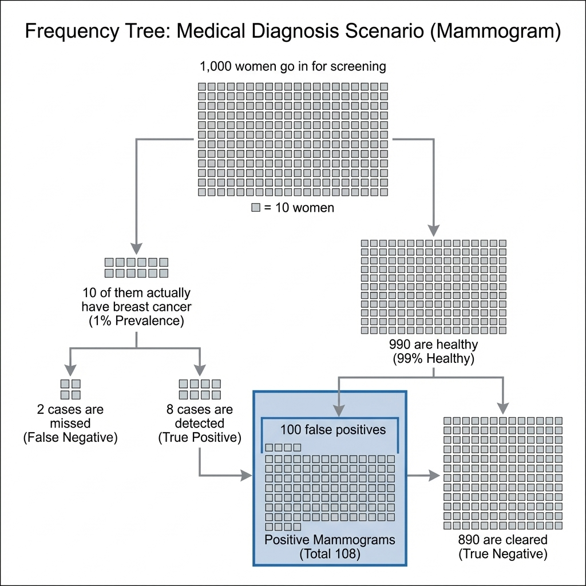
Using the frequency tree in Figure 2.2, we can see that out of 1000 cases:
- Number of actual cancer cases = 10.
- Number of healthy cases = 990.
The test detects 8 out of the 10 cancer cases (True Positives). The test falsely flags 100 out of the 990 healthy cases (False Positives). The total number of positive mammograms is thus \(8 + 100 = 108\). The number of these that are actually cancer is 8. Therefore, the posterior probability is: \[ P(\text{cancer} \mid \text{positive}) = \frac{8}{108} \approx 0.074. \] There is only about a 7.4% chance Alice has cancer, despite the positive test result.
Example 2.15 (Apple Watch Series 4 ECG and Bayes’ Theorem) The Apple Watch Series 4 can perform a single-lead ECG and detect atrial fibrillation. The software can correctly identify 98% of cases of atrial fibrillation (true positives) and 99% of cases of non-atrial fibrillation (true negatives) (Kim et al. 2024; Bumgarner et al. 2018).
| Predicted | atrial fibrillation | no atrial fibrillation | Total |
|---|---|---|---|
| atrial fibrillation | 1960 | 980 | 2940 |
| no atrial fibrillation | 40 | 97020 | 97060 |
| Total | 2000 | 98000 | 100000 |
However, what is the probability of a person having atrial fibrillation when atrial fibrillation is identified by the Apple Watch Series 4? We use Bayes’ theorem to answer this question. \[ P(\text{atrial fibrillation}\mid \text{atrial fibrillation is identified }) = \frac{0.01960}{ 0.02940} = 0.6667 \]
The conditional probability of having atrial fibrillation when the Apple Watch Series 4 detects atrial fibrillation is about 67% for this population with 2% prevalence.
However, among younger users (under 55), the prevalence of atrial fibrillation is only about 0.1%. Applying Apple’s own reported figures for the device, 98% sensitivity and 99.6% specificity (slightly higher than the 99% used in the table above), to this group, a Bayesian analysis by Yazdi (2019) finds the positive predictive value falls to about 19.6%, meaning the app incorrectly flags atrial fibrillation about 80% of the time. This group constitutes the majority of wearable device users. The calculation illustrates how dramatically the base rate (prevalence) affects the PPV, even when sensitivity and specificity are high.
The electrocardiogram app becomes more reliable in older individuals: the same analysis gives a positive predictive value of 76 percent among users between the ages of 60 and 64, 91 percent among those aged 70 to 74, and 96 percent for those older than 85.
In the case of medical diagnostics, the sensitivity is the ratio of people who have the disease and tested positive to the total number of positive cases in the population \[ P(T=1\mid D=1) = \dfrac{P(T=1,D=1)}{P(D=1)} = 0.0196/0.02 = 0.98 \] The specificity is given by \[ P(T=0\mid D=0) = \dfrac{P(T=0,D=0)}{P(D=0)} = 0.9702/0.98 = 0.99. \] As we see, the test is highly sensitive and specific. However, only 66% of those who are tested positive will have the disease. This is due to the fact that the number of sick people is much less than the number of healthy and presence of type I error.
2.6 Advanced Applications
Example 2.16 (Obama Elections) This example demonstrates a Bayesian approach to election forecasting using polling data from the 2012 US presidential election. The goal is to predict the probability of Barack Obama winning the election by combining polling data across different states.
The data used includes polling data from various pollsters across all 50 states plus DC. Each state has polling percentages for Republican (GOP) and Democratic (Dem) candidates along with their electoral vote counts. The data are aggregated by state, taking the most recent polls available.
The techniques applied involve Bayesian simulation using a Dirichlet distribution to model uncertainty in polling percentages.
Monte Carlo simulation runs 10,000 simulations of the election to estimate win probabilities. The analysis is conducted state-by-state, calculating Obama’s probability of winning each individual state. Electoral college modeling combines state probabilities with electoral vote counts to determine the overall election outcome. The simulation runs the entire election multiple times to account for uncertainty and determines the likelihood of Obama reaching the required 270 electoral votes to win. This approach demonstrates how pattern matching through statistical modeling can be used for prediction, showing how polling data can be transformed into probabilistic forecasts of election outcomes.
We start by loading the data and aggregating it by state. We then run the simulation and plot probabilities by state.
| state | R.pct | O.pct | EV |
|---|---|---|---|
| Alabama | 61 | 38 | 9 |
| Alaska | 55 | 42 | 3 |
| Arizona | 54 | 44 | 11 |
| Arkansas | 61 | 37 | 6 |
| California | 38 | 59 | 55 |
| state | R.pct | O.pct | EV | |
|---|---|---|---|---|
| 47 | Virginia | 48 | 51 | 13 |
| 48 | Washington | 42 | 56 | 12 |
| 49 | West Virginia | 62 | 36 | 5 |
| 50 | Wisconsin | 46 | 53 | 10 |
| 51 | Wyoming | 69 | 28 | 3 |
Election 2012 Data (first 5 states and last 5 states).
We then plot the probabilities of Obama winning by state.
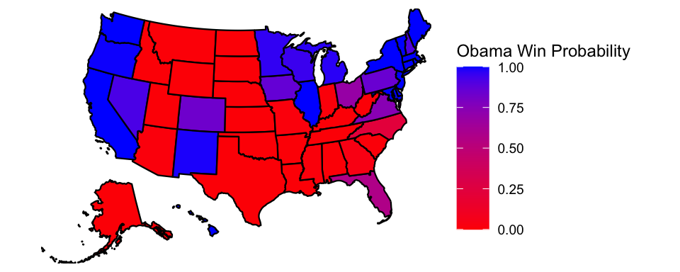
We use those probabilities to simulate the probability of Obama winning the election. First, we calculate the probability of Obama having 270 EV or more
set.seed(87) # Crosby
sim.election <- function(win.probs) {
winner <- rbinom(51, 1, win.probs$Obama)
sum(win.probs$EV * winner)
}
sim.EV <- replicate(10000, sim.election(win.probs))
oprob <- sum(sim.EV >= 270) / length(sim.EV)
oprob
## 0.96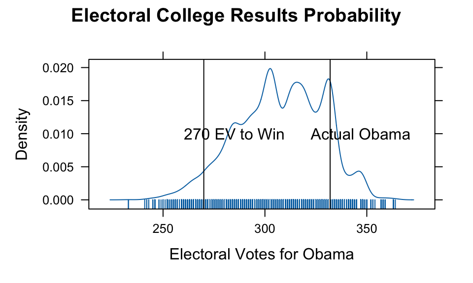
The analysis of the 2012 U.S. Presidential Election data reveals several key insights about the predictive power of state-level polling and the uncertainty inherent in electoral forecasting. The actual result of 332 electoral votes falls within the simulated range, demonstrating the model’s validity. The 270-vote threshold needed to win the presidency is clearly marked and serves as a critical reference point.
We used a relatively simple model to simulate the election outcome. The model uses Dirichlet distributions to capture uncertainty in state-level polling percentages. Obama’s win probabilities vary significantly across states, reflecting the competitive nature of the election. The simulation approach accounts for both sampling uncertainty and the discrete nature of electoral vote allocation. Figure 2.3 shows the distribution of possible outcomes. The actual Obama total of 332 electoral votes is marked and falls within the reasonable range of simulated outcomes. This validates the probabilistic approach to election forecasting.
This analysis demonstrates how Bayesian methods can be effectively applied to complex prediction problems with multiple sources of uncertainty, providing both point estimates and uncertainty around those estimates.
2.7 Graphical Representation of Conditional Independence
We can use the telescoping property of conditional probabilities to write the joint probability distribution as a product of conditional probabilities. This is the essence of the chain rule of probability. It is given by \[ P(x_1, x_2, \ldots, x_n) = P(x_1)P(x_2 \mid x_1)P(x_3 \mid x_1, x_2) \ldots P(x_n \mid x_1, x_2, \ldots, x_{n-1}). \] The expression on the right-hand side can be simplified if some of the variables are conditionally independent. For example, if \(x_3\) is conditionally independent of \(x_2\), given \(x_1\), then we can write \[ P(x_3 \mid x_1, x_2) =P(x_3 \mid x_1). \]
In a high-dimensional case, when we have a joint distribution over a large number of random variables, we can often simplify the expression by using independence or conditional independence assumptions. Sometimes it is convenient to represent these assumptions in a graphical form. This is the idea behind the concept of a Bayesian network. Essentially, the graph is a compact representation of a set of independencies that hold in the distribution.
Let’s consider an example of a joint distribution with three random variables; we have the following joint distribution: \[ P(a,b,c) = P(a\mid b,c)P(b\mid c)P(c) \]
Graphically, we can represent the relations between the variables known as a Directed Acyclic Graph (DAG), which is known as a Bayesian network. Each node represents a random variable and the arrows represent the conditional dependencies between the variables. When two nodes are connected, they are not independent. Consider the following three cases:
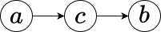
\[ P(b\mid c,a) = P(b\mid c),~ P(a,b,c) = P(a)P(c\mid a)P(b\mid c) \]
Line Structure
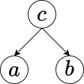
\[ P(a\mid b,c) = P(a\mid c), ~ P(a,b,c) = P(a\mid c)P(b\mid c)P(c) \]
Lambda Structure
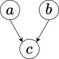
\[ P(a\mid b) = P(a),~ P(a,b,c) = P(c\mid a,b)P(a)P(b) \]
V-structure
Although the graph shows us the conditional independence assumptions, we can also derive other independencies from the graph. An interesting question is whether they are connected through a third node. In the first case (a), we have \(a\) and \(b\) connected through \(c\). Thus, \(a\) can influence \(b\). However, once \(c\) is known, \(a\) and \(b\) are independent. In case (b), the logic here is similar: \(a\) can influence \(b\) through \(c\), but once \(c\) is known, \(a\) and \(b\) are independent. In the third case (c), \(a\) and \(b\) are independent, but once \(c\) is known, \(a\) and \(b\) are not independent. You can formally derive these independencies from the graph by comparing \(P(a,b\mid c)\) and \(P(a\mid c)P(b\mid c)\).
Example 2.17 (Bayes Home Diagnostics) Suppose that a house alarm system sends me a text notification when some motion inside my house is detected. It detects motion when I have a person inside (burglar) or during an earthquake. Say, from prior data we know that during an earthquake the alarm is triggered in 10% of the cases. Once I receive a text message, I start driving back home. While driving, I hear on the radio about a small earthquake in our area. Now we want to know \(P(b \mid a)\) and \(P(b \mid a,r)\). Here \(b\) = burglary, \(e\) = earthquake, \(a\) = alarm, and \(r\) = radio message about small earthquake.
The joint distribution is then given by \[ P(b,e,a,r) = P(r \mid a,b,e)P(a \mid b,e)P(b\mid e)P(e). \] Since we know the causal relations, we can simplify this expression \[ P(b,e,a,r) = P(r \mid e)P(a \mid b,e)P(b)P(e). \] The \(P(a \mid b,e)\) distribution is defined by
| \(P(a=1 \mid b,e)\) | b | e |
|---|---|---|
| 0 | 0 | 0 |
| 0.1 | 0 | 1 |
| 1 | 1 | 0 |
| 1 | 1 | 1 |
Graphically, we can represent the relations between the variables known as a Directed Acyclic Graph (DAG), which is known as a Bayesian network.
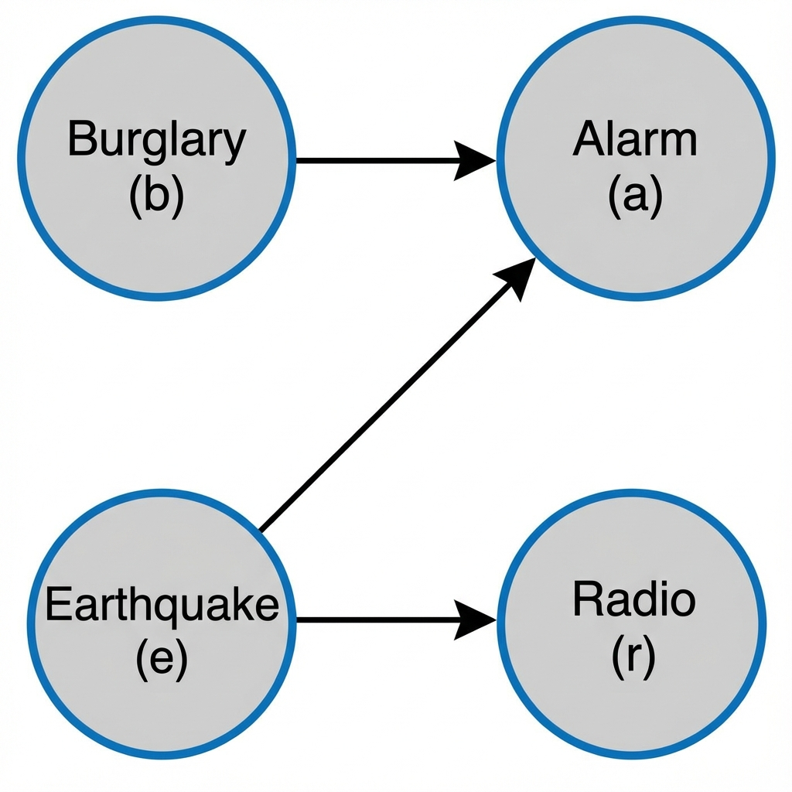
Now we can easily calculate \(P(a=0 \mid b,e)\) from the property of a probability distribution \(P(a=1 \mid b,e) + P(a=0 \mid b,e) = 1\). In addition, we are given \(P(r=1 \mid e=1) = 0.5\) and \(P(r=1 \mid e=0) = 0\). Further, based on historic data, we have \(P(b) = 2\cdot10^{-4}\) and \(P(e) = 10^{-2}\). Note that causal relations allowed us to have a more compact representation of the joint probability distribution. The original naive representation requires specifying \(2^4 - 1 = 15\) parameters.
To answer our original question, calculate \[ P(b \mid a) = \dfrac{P(a \mid b)P(b)}{P(a)},~~P(a) = P(a=1 \mid b=1)P(b=1) + P(a=1 \mid b=0)P(b=0). \] We have everything but \(P(a \mid b)\). This is obtained by marginalizing \(P(a=1 \mid b,e)\) to yield \[ P(a \mid b) = P(a \mid b,e=1)P(e=1) + P(a \mid b,e=0)P(e=0). \] We can calculate \[ P(a=1 \mid b=1) = 1, ~P(a=1 \mid b=0) = 0.1*10^{-2} + 0 = 10^{-3}. \] This leads to \(P(b \mid a) = 2\cdot10^{-4}/(2\cdot10^{-4} + 10^{-3}(1-2\cdot10^{-4})) = 1/6\).
This result is somewhat counterintuitive. We get such a low probability of burglary because its prior is very low compared to the prior probability of an earthquake. What will happen to the posterior if we live in an area with higher crime rates, say \(P(b) = 10^{-3}\). Figure 2.5 shows the relationship between the prior and posterior. \[ P(b \mid a) = \dfrac{P(b)}{P(b) + 10^{-3}(1-P(b))} \]
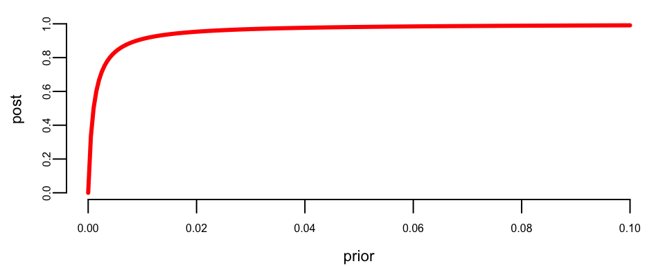
Now, suppose that you hear on the radio about a small earthquake while driving. Then, using Bayesian conditioning, \[ P(b=1 \mid a=1,r=1) = \dfrac{P(a,r \mid b)P(b)}{P(a,r)} \] and \[ P(a,r \mid b)P(b) = \dfrac{\sum_e P(b=1,e,a=1,r=1)}{\sum_b\sum_eP(b,e,a=1,r=1)} \] \[ =\dfrac{\sum_eP(r=1 \mid e)P(a=1 \mid b=1,e)P(b=1)P(e)}{\sum_b\sum_eP(r=1 \mid e)P(a=1 \mid b,e)P(b)P(e)} \] which is \(\approx 0.2\%\) in our case. This effect is called explaining away, namely when new information explains some previously known fact.
Exercises
Pen-and-Pencil
Exercise 2.1 (Manchester) While watching a game of Champions League football in a cafe, you observe someone who is clearly supporting Manchester United in the game. What is the probability that they were actually born within 20 miles of Manchester? Assume that you have the following base rate probabilities
- The probability that a randomly selected person in a typical local bar environment is born within 20 miles of Manchester is 1/20
- The chance that a person born within 20 miles of Manchester actually supports United is 7/10
- The probability that a person not born within 20 miles of Manchester supports United with probability 1/10
Exercise 2.2 (Lung Cancer) According to the Center for Disease Control (CDC), we know that “compared to nonsmokers, men who smoke are about \(23\) times more likely to develop lung cancer and women who smoke are about \(13\) times more likely” You are also given the information that \(17.9\)% of women in 2016 smoke.
If you learn that a woman has been diagnosed with lung cancer, and you know nothing else, what’s the probability she is a smoker?
Exercise 2.3 (Tesla Chip) Tesla purchases a particular chip called the HW 5.0 auto chip from three suppliers: Matsushita Electric, Philips Electronics, and Hitachi. From historical experience, we know that 30% of the chips are purchased from Matsushita; 20% from Philips and the remaining 50% from Hitachi. The manufacturer has extensive histories on the reliability of the chips. We know that 3% of the Matsushita chips are defective; 5% of the Philips and 4% of the Hitachi chips are defective.
A chip is later found to be defective; what is the probability it was manufactured by each of the manufacturers?
Exercise 2.4 (Light Aircraft) Seventy percent of the light aircraft that disappear while in flight in a certain country are subsequently discovered. Of the aircraft that are discovered, 60% have an emergency locator, whereas 90% of the aircraft not discovered do not have such a locator. Suppose that a light aircraft has disappeared. If it has an emergency locator, what is the probability that it will be discovered?
Exercise 2.5 (Floyd Landis) Floyd Landis was disqualified after winning the 2006 Tour de France. This was due to a urine sample that the French national anti-doping laboratory flagged after Landis had won stage \(17\) because it showed a high ratio of testosterone to epitestosterone. Because he was among the leaders, he provided \(8\) pairs of urine samples—so there were \(8\) opportunities for a true positive and \(8\) opportunities for a false positive.
- Assume that the test has a specificity of \(95\)%. What’s the probability of all \(8\) samples being labeled “negative”?
- Now assume the specificity is \(99\)%. What’s the false positive rate for the test
- Based on these data, explain how you would assess the probability of guilt of Landis in a court hearing.
Exercise 2.6 (Forensic Match: The Odds Form of Bayes’ Rule) A crime-scene hair sample is compared to a suspect’s hair using a forensic matching procedure. Validation studies show the procedure returns a “match” (\(E\)) with probability \(P(E \mid G) = 0.90\) when the suspect really is the source (guilty, \(G\)), and with probability \(P(E \mid \neg G) = 0.02\) when the suspect is not the source (innocent). Before any forensic evidence is considered, detectives judge from other circumstances that the suspect has a 1-in-200 chance of being guilty.
Work this problem in the odds form of Bayes’ rule, \(O(G \mid E) = BF \times O(G)\), introduced in this chapter.
- Compute the Bayes factor \(BF = P(E \mid G) / P(E \mid \neg G)\) and state in words how many times more likely a match is under guilt than under innocence.
- Convert the prior probability of guilt into prior odds \(O(G) = P(G)/P(\neg G)\).
- Use the odds form to find the posterior odds of guilt given the match.
- Convert the posterior odds back into a posterior probability \(P(G \mid E)\).
- Check your answer to (d) against the direct probability form, \[ P(G \mid E) = \frac{P(E \mid G)P(G)}{P(E \mid G)P(G) + P(E \mid \neg G)P(\neg G)}, \] and confirm the two forms agree.
- A second, conditionally independent piece of evidence, an eyewitness identification, carries its own Bayes factor of \(3\) in favor of guilt. Starting from the posterior odds in (c), update once more to find \(O(G \mid E_1, E_2)\) and the corresponding posterior probability \(P(G \mid E_1, E_2)\).
- Even combining both pieces of evidence, is the posterior probability of guilt high enough to convict “beyond a reasonable doubt”? Relate your answer to the reasoning in the Prosecutor’s Fallacy (Example 2.8), the Island Problem (Example 2.9), and the Nakamura case (Example 2.10), and explain why the odds form is especially convenient once there is more than one piece of evidence to combine.
Exercise 2.7 (BRCA1) Approximately \(1\)% of woman aged 40–50 have breast cancer. A woman with breast cancer has a \(90\)% chance of a positive mammogram test and a \(10\)% chance of a false positive result. Given that someone has a positive test, what’s the posterior probability that they have breast cancer?
If you have the BRCA1 gene mutation, you have a \(90\)% chance of developing breast cancer. The prevalence of mutations at BRCA1 has been estimated to be 0.04%–0.200.20% in the general population. The genetic test for a mutation of this gene has a \(99.9\)% chance of finding the mutation. The false positive rate is unknown, but you are willing to assume it’s still \(10\)%.
Given that someone tests positive for the BRCA1 mutation, what’s the posterior probability that they have breast cancer?
Exercise 2.8 (Another Cancer Test) Bayes is particularly useful when predicting outcomes that depend strongly on prior knowledge.
Suppose that a woman is her forties takes a mammogram test and receives the bad news of a positive outcome. Since not every positive outcome is real, you assess the following probabilities. The base rate for a woman is her forties to have breast cancer is \(1.4\)%. The probability of a positive test given breast cancer is \(75\)%, and the probability of a false positive is \(10\)%.
Given the positive test, what’s the probability that she has breast cancer?
Exercise 2.9 (Bayes’ Rule: Hit and Run Taxi) A certain town has two taxi companies: Blue Birds, whose cabs are blue, and Uber, whose cabs are black. Blue Birds has 15 taxis in its fleet, and Uber has 75. Late one night, there is a hit-and-run accident involving a taxi.
The town’s taxis were all on the streets at the time of the accident. A witness saw the accident and claims that a blue taxi was involved. The witness undergoes a vision test under conditions similar to those on the night in question. Presented repeatedly with a blue taxi and a black taxi, in random order, they successfully identify the color of the taxi 4 times out of 5.
Which company is more likely to have been involved in the accident?
Exercise 2.10 (Gold and Silver Coins) A chest has two drawers. It is known that one drawer has \(3\) gold coins and no silver coins. The other drawer is known to contain \(1\) gold coin and \(2\) silver coins.
You don’t know which drawer is which. You randomly select a drawer and, without looking inside, you pull out a coin. It is gold. Show that the probability that the remaining two coins in the drawer are gold is \(75\)%.
Exercise 2.11 (The Monty Hall Problem) This problem is named after the host of the long-running TV show, Let’s Make a Deal. A contestant is given a choice of 3 doors. There is a prize (a car, say) behind one of the doors and something worthless behind the other two doors (say two goats).
After the contestant chooses a door, Monty opens one of the other two doors, revealing a goat. The contestant has the choice of switching doors. Is it advantageous to switch doors or not?
Exercise 2.12 (Medical Testing for HIV) A controversial issue in recent years has been the possible implementation of random drug and/or disease testing (e.g., testing medical workers for HIV virus, which causes AIDS). In the case of HIV testing, the standard test is the Wellcome ELISA test.
The test’s effectiveness is summarized by the following two attributes:
- The sensitivity is about 0.993. That is, if someone has HIV, there is a probability of 0.993 that they will test positive.
- The specificity is about 0.9999. This means that if someone doesn’t have HIV, there is a probability of 0.9999 that they will test negative.
In the general population, incidence of HIV is reasonably rare. It is estimated that the chance that a randomly chosen person has HIV is \(0.000025\).
To investigate the possibility of implementing a random HIV-testing policy with the ELISA test, calculate the following:
- The probability that someone will test positive and have HIV.
- The probability that someone will test positive and not have HIV.
- The probability that someone will test positive.
- Suppose someone tests positive. What is the probability that they have HIV?
In light of the last calculation, do you envision any problems in implementing a random testing policy?
Exercise 2.13 (The Three Prisoners) An unknown two will be shot, the other freed. Prisoner A asks the warder for the name of one other than himself who will be shot, explaining that as there must be at least one, the warder won’t really be giving anything away. The warder agrees, and says that B will be shot. This cheers A up a little: his judgmental probability for being shot is now 1/2 instead of 2/3.
Show (via Bayes’ theorem) that
- A is mistaken - assuming that he thinks the warder is as likely to say "C" as "B" when he can honestly say either; but that
- A would be right, on the hypothesis that the warder will say "B" whenever he honestly can.
Exercise 2.14 (The Two Children) You meet Max walking with a boy whom he proudly introduces as his son.
- What is your probability that his other child is also a boy, if you regard him as equally likely to have taken either child for a walk?
- What would the answer be if you regarded him as sure to walk with the boy rather than the girl, if he has one of each?
- What would the answer be if you regarded him as sure to walk with the girl rather than the boy, if he has one of each?
Exercise 2.15 (Medical Exam) As a result of a medical examination, one of the tests revealed a serious illness in a person. This test has a high precision of 99% (the probability of a positive response in the presence of the disease is 99%, the probability of a negative response in the absence of the disease is also 99%). However, the detected disease is quite rare and occurs only in one person per 10,000. Calculate the probability that the person being examined does have an identified disease.
Exercise 2.16 (The Jury) Assume that the probability is 0.95 that a jury selected to try a criminal case will arrive at the correct verdict whether innocent or guilty. Further, suppose that 80% of people brought to trial are in fact guilty.
- Given that the jury finds a defendant innocent, what’s the probability that they are in fact innocent?
- Given that the jury finds a defendant guilty, what’s the probability that they are in fact guilty?
- Do these probabilities sum to one?
Exercise 2.17 (Oil Company) An oil company has purchased an option on land in Alaska. Preliminary geologic studies have assigned the following probabilities of finding oil \[ P ( \text{ high quality oil} ) = 0.50 \; \; P ( \text{ medium quality oil} ) = 0.20 \; \; P ( \text{ no oil} ) = 0.30 \; \; \] After 200 feet of drilling on the first well, a soil test is taken. The probabilities of finding the particular type of soil identified by the test are as follows: \[ P ( \text{ soil} \; \mid \; \text{ high quality oil} ) = 0.20 \; \; P ( \text{ soil} \; \mid \; \text{ medium quality oil} ) = 0.80 \; \; P ( \text{ soil} \; \mid \; \text{ no oil} ) = 0.20 \; \; \]
- What are the revised probabilities of finding the three different types of oil?
- How should the firm interpret the soil test?
Exercise 2.18 (Hypertension Screening) A screening test for high blood pressure, corresponding to a diastolic blood pressure of \(90\) mm Hg or higher, produced the following probability table
| Hypertension | ||
|---|---|---|
| Test | Present | Absent |
| +ve | 0.09 | 0.03 |
| -ve | 0.03 | 0.85 |
- What’s the probability that a random person has hypertension?
- What’s the probability that someone tests positive on the test?
- Given a person who tests positive, what is the probability that they have hypertension?
- What would happen to your probability of having hypertension given you tested positive if you initially thought you had a \(50\)% chance of having hypertension.
Exercise 2.19 (Steroids) Suppose that a hypothetical baseball player (call him “Rafael”) tests positive for steroids. The test has the following sensitivity and specificity
- If a player is on Steroids, there’s a \(95\)% chance of a positive result.
- If a player is clean, there’s a \(10\)% chance of a positive result.
A respected baseball authority (call him “Bud”) claims that \(1\)% of all baseball players use Steroids. Another player (call him “Jose”) thinks that there’s a \(30\)% chance of all baseball players using Steroids.
- What’s Bud’s probability that Rafael uses Steroids?
- What’s Jose’s probability that Rafael uses Steroids?
Explain any probability rules that you use.
Exercise 2.20 (Breathalyzer Test) A Breathalyzer test is calibrated so that if it is used on a driver whose blood alcohol concentration exceeds the legal limit, it will read positive \(99\)% of the time, while if the driver is below the limit it will read negative \(90\)% of the time. Suppose that based on prior experience, you have a prior probability that the driver is above the legal limit of \(10\)%.
- If a driver tests positive, what is the posterior probability that they are above the legal limit?
- At Christmas, \(20\)% of the drivers on the road are above the legal limit. If all drivers were tested, what proportion of those testing positive would actually be above the limit
- How does your answer to part \(1\) change. Explain
Exercise 2.21 (Chicago Bearcats) The Chicago bearcats baseball team plays \(60\)% of its games at night and \(40\)% in the daytime. They win \(55\)% of their night games and only \(35\)% of their day games. You found out the next day that they won their last game
- What is the probability that the game was played at night
- What is the marginal probability that they will win their next game?
Explain clearly any rules of probability that you use.
Exercise 2.22 (Spam Filter) Several spam filters use Bayes’ rule. Suppose that you empirically find the following probability table for classifying emails with the phrase “buy now” in their title as either “spam” or “not spam”.
| Spam | Not Spam | |
|---|---|---|
| “buy now” | 0.02 | 0.08 |
| not “buy now” | 0.18 | 0.72 |
- What is the probability that you will receive an email with spam?
- Suppose that you are given a new email with the phrase “buy now” in its title. What is the probability that this new email is spam?
- Explain clearly any rules of probability that you use.
Exercise 2.23 (Chicago Cubs) The Chicago Cubs are having a great season. So far they’ve won \(72\) out of the \(100\) games played so far. You also have the expert opinion of Bob, the sports analysis. He tells you that he thinks the Cubs will win. Historically, his predictions have a \(60\)% chance of coming true.
- Calculate the probability that the Cubs will win given Bob’s prediction
- Suppose you now learn that it’s a home game and that the Cubs win \(60\)% of their games at Wrigley field. What’s your updated probability that the Cubs will win their game?
Exercise 2.24 (Student-Grade Causality) Consider the following probabilistic model. The student does poorly in a class (\(c = 1\)) or well (\(c = 0\)) depending on the presence/absence of depression (\(d = 1\) or \(d = 0\)) and whether he/she partied last night (\(v = 1\) or \(v = 0\)). Participation in the party can also lead to the fact that the student has a headache (\(h = 1\)). As a result of the poor student’s performance, the teacher gets upset (\(t = 1\)). The probabilities are given by:
| \(p(c=1\mid d,v)\) | v | d |
|---|---|---|
| 0.999 | 1 | 1 |
| 0.9 | 1 | 0 |
| 0.9 | 0 | 1 |
| 0.01 | 0 | 0 |
| \(p(h=1\mid v)\) | v |
|---|---|
| 0.9 | 1 |
| 0.1 | 0 |
| \(p(t=1\mid c)\) | c |
|---|---|
| 0.95 | 1 |
| 0.05 | 0 |
\(p(v=1)=0.2\), and \(p(d=1) = 0.4\).
Draw the causal relationships in the model. Calculate \(p(v=1\mid h=1)\), \(p(v=1\mid t=1)\), \(p(v=1\mid t=1,h=1)\).
Exercise 2.25 (True/False)
- In a sample of \(100{,}000\) emails, you found that \(550\) are spam. Your next email contains the word “bigger”. From historical experience, you know that half of all spam email contains the word “bigger” and only \(2\)% of non-spam emails contain it. The probability that this new email is spam is approximately \(12\)%.
- Suppose that there’s a \(5\)% chance that it snows tomorrow, an \(80\)% chance that the Chicago bears play their football game tomorrow given that it snows, and that they are certain to play if it does not snow. The probability that they play tomorrow is then \(80\)%.
- Bayes’ rule states that \(p(A\mid B) =p(B\mid A)\).
- If \(P( A \text{ and }B ) = 0.4\) and \(P( B) = 0.8\), then \(P( A\mid B ) = 0.5\).
Exercise 2.26 (Sensitivity and Specificity) The quality of Nvidia’s graphics chips is such that the probability that a randomly chosen chip is defective is only \(0.1\)%. You have invented a new technology for testing whether a given chip is defective or not. This test will always identify a defective chip as defective and will only “falsely” identify a good chip as defective with probability \(1\)%.
- What are the sensitivity and specificity of your testing device?
- Given that the test identifies a defective chip, what’s the posterior probability that it is actually defective?
- What percentage of the chips will the new technology identify as being defective?
- Should you advise Nvidia to go ahead and implement your testing device? Explain.
Computing
Exercise 2.27 (Presidential Election Prediction) Use polling data to predict the winner of a US presidential election using simulations. You can obtain polling data from sources like http://www.electoral-vote.com/ or use historical data files (ev.csv for electoral votes, state_abbr.csv for state abbreviations).
- Load state-level polling averages and electoral vote counts.
- Simulate the election 10,000 times, treating each state’s outcome as a random draw from a normal distribution centered at the poll average with a realistic polling error (typically 5-7%).
- Report the prediction as a 50% confidence interval for each candidate’s electoral vote count.
- Discuss the limitations of assuming independent state-level polling errors.
Exercise 2.28 (Naive Bayes Text Classifier from Scratch) Build a naive Bayes spam filter from scratch, following the same logic as Example 2.13: estimate class priors and per-word likelihoods from a labeled corpus, then combine them through Bayes’ rule to classify new messages. Treating every word in a message as conditionally independent given the class label is exactly the “naive” assumption discussed in the chapter.
Training corpus (6 messages labeled spam, 6 labeled ham):
| Spam messages | Ham messages |
|---|---|
| win free money now | let us meet for lunch today |
| free cash prize claim now | are you free for dinner tonight |
| you win a free prize | can we schedule the meeting today |
| claim your free money today | let me know about the project |
| urgent win cash now | meeting agenda for tomorrow project |
| free entry win prize now | are we still on for lunch |
Held-out test messages, with true labels for scoring accuracy:
| Message | True label |
|---|---|
| free money now | spam |
| let us schedule dinner | ham |
| win a free prize today | spam |
| can you meet for the project meeting | ham |
| claim your prize now | spam |
| are you free tomorrow for lunch | ham |
- Tokenize each training message on whitespace (after converting to lower case) and build the vocabulary. Estimate the class priors \(P(\text{spam})\) and \(P(\text{ham})\) from the label proportions, and estimate every per-word likelihood \(P(\text{word}\mid \text{spam})\) and \(P(\text{word}\mid \text{ham})\) using Laplace (add-one) smoothing, so that no word ever receives zero probability.
- For the test message “free money now,” compute the log-posterior \(\log P(\text{spam}) + \sum_i \log P(w_i\mid \text{spam})\) and the corresponding quantity for ham explicitly, using your fitted probabilities. Which class wins?
- Classify all six held-out test messages using \(\arg\max_{c \in \{\text{spam},\text{ham}\}} \left[ \log P(c) + \sum_i \log P(w_i \mid c) \right]\) and report the classifier’s accuracy.
- The word “free” appears in both a spam message (“free cash prize claim now”) and a ham message (“are you free for dinner tonight”). Explain why naive Bayes can still classify correctly even though individual words like this one are ambiguous, and give a concrete reason why treating words as conditionally independent given the class is not literally true of English sentences.
- (Optional) Cross-check your classifier against
e1071::naiveBayesfit on the same data.